PET index - Diagnostic Clip
(C) 2017-2017 André Fachat
This page describes the PET diagnostic cartridge.
Many thanks esp. go to Manuel Amorim who helped work out the schematics of the board and Jett Raymond, who provided me with actually a second, different version of the board! Also many thanks go to Rob Clarke, who provided me with a disassembly of (one version of) the ROM.
- 2017-08-13 Added the 1st version ROM dump and a disassembly for it.
- 2017-07-16 Started this page
The diagnostic clip is an add-on that contains a diagnostic ROM to identify problems with the PET hardware. It consists of userport and tape plugs with specific wiring, and a processor clip. This processor clip is clipped onto the 6502 before the PET is powered on. It is connected to a small box that contains the ROMs with a 40pin flat ribbon cable.
After powering on, the on-board ROM is disabled or evaded - depending on the version, for details see below.
A version of the manual is documented on commodore.ca.
A comment from William Levak:
Commodore made a diagnostic device for the PET. It consisted of a 40 pin clip that attached to the CPU. This was connected by ribbon cable to a small circuit board that contained a ROM and a reset switch. When pressed, the address bus was forced to $9xxx, causing the computer to initialize from the ROM on the diagnostic device. A diagnostic routine was then loaded to low memory on the computer and the 40 pin clip removed.
This device is not very complicated. I have never traced out the circuit, but it should not be difficult to do. I think the ROM images are in the CBM archive. There are two of these devices, one for PET's with the CRTC, and one for those without the CRTC. This device was not intended for the original PET's (which have their own built in diagnostic routine), but with a few changes to the system board, it will run on those too.
There are connectors with jumpers on them that need to be put on the keyboard and user ports. These are simple enough to be made by almost anyone.
Note: the diagnostic devices and their use are described in the "Testing the PET Computer" manual, unfortunately the manual assumes you already have them, so it lacks the details. I could find the diagnostic connectors on the CBM archive. For the original PET, these are all you need. The original ROMs have a diagnostic routine in the ROM. You install the connectors, and turn on the PET, and runs through a self diagnostic. When it finishes, the red LED on the system board lights up. On later models the diagnostic routine has been replaced with the machine language monitor.
As it seems the two versions desribed below refer to the two versions mentioned by William. The one that uses the /NOROM pin to disable the ROMs on the main board are used for the CRTC versions of the machine, that actually used an unused pin at the CPU socket, to disable the ROMs
The other one, that forces the address bus to $9xxx, is used for the older PET, that did not have the /NOROM pin.
- Diagnostic Clip manual Scans of the manual
- Diagnostic Clip connectors diagrams on the CBM archive
Manuel Amorim sent me a number of pictures and also we were able to work out the schematics of his diagnostic clip. This one seems to indeed pull down the address bits A13 and A14 to force the address to a - hopefully unused - $9xxx area to avoid hardware conflicts.
Also see a link to Manuel's page below the images.
I got a schematics from Jett Raymond that uses /NOROM pin on the PET CPU socket, to actually disable the on-board ROM selection. This is a special feature of the PET, where an unused 6502 pin is re-used for that purpose.
Because this disables the original PET ROMs, there is no need to force the address to an unused area - the ROM code can actually run at $Fxxx.
 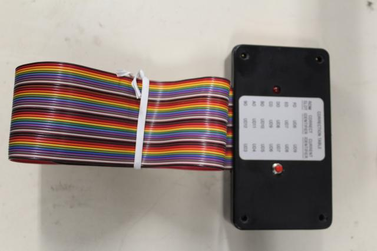
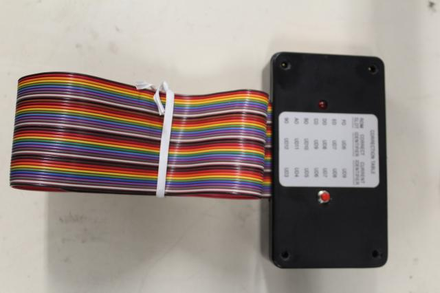 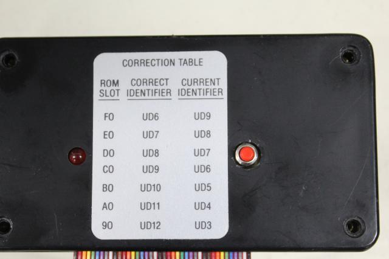
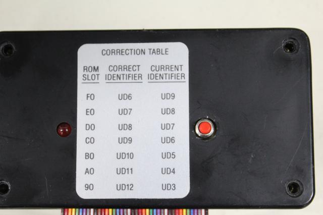 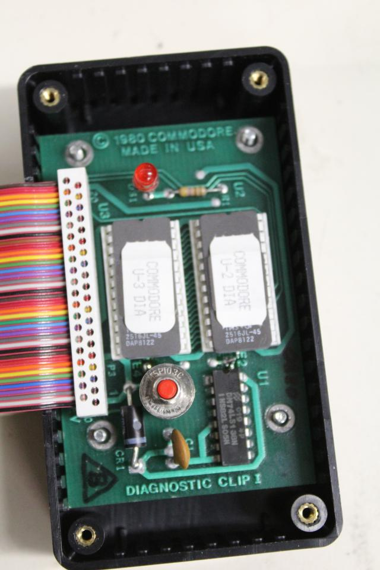
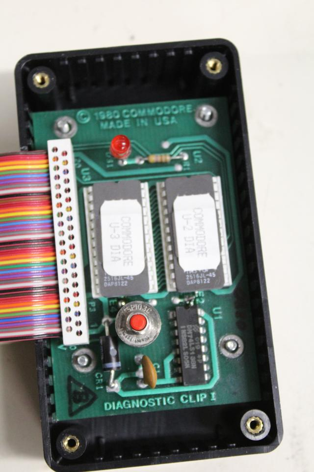 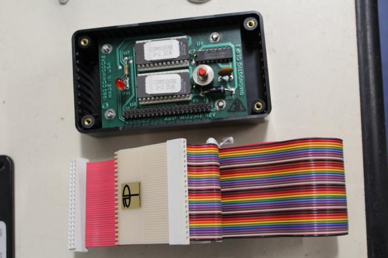
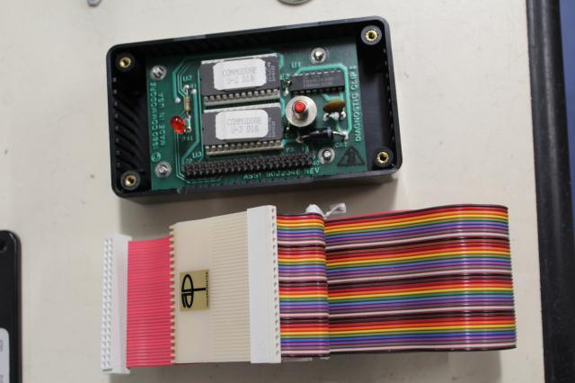 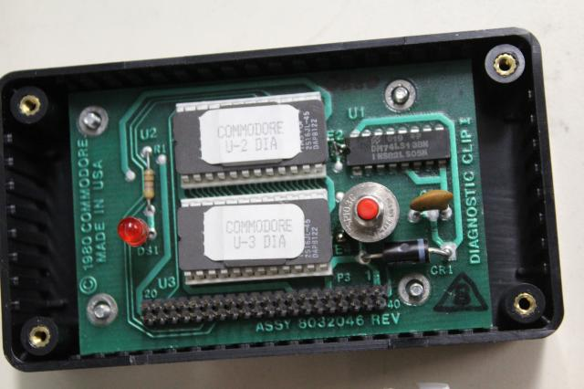
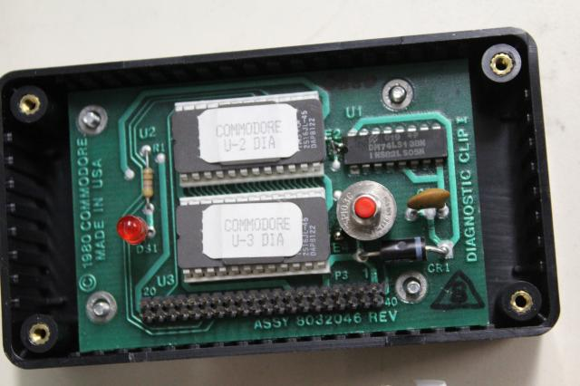 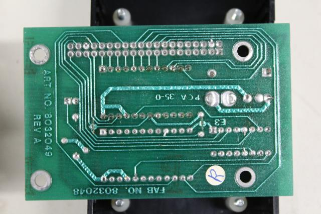
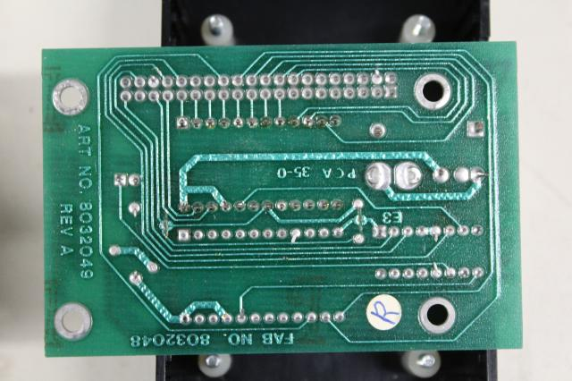 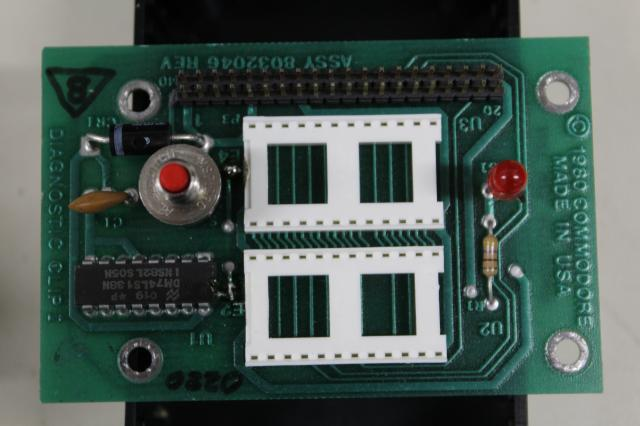
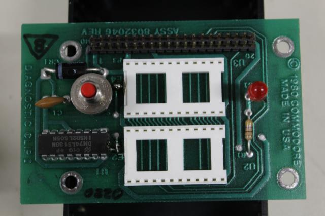
{kind=link}
{kind=link}
{kind=link}
{kind=link}
{kind=link}
{kind=link}
{kind=link}
{kind=link}
As there are two versions of the diag clip, with different features concerning the ROM addressing, there are (at least) two types of ROMs obviously.
However, it seems there is only the one available for the $fxxx version. But even so, there are multiple versions, see the links below.
Return to Homepage
Last modified: 2017-08-13